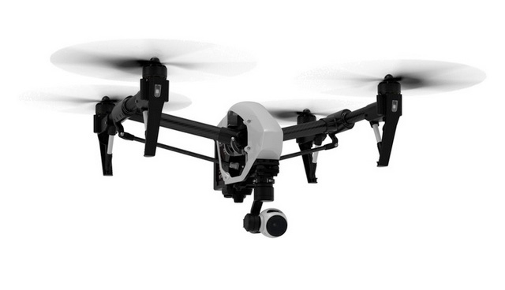

Premium Kicks is founded in 2018 by a team of Indian Institute of Information Technology, Una (IIT Una) graduates. The team started their explorations in unmanned systems as early as 2004 when they independently discovered the quadrotor configuration. On the back of bootstrapping projects from the Aerospace engineering department, Premium Kick helped IIIT Una win an international UAV competition in 2020. It subsequently created the then world’s smallest and lightest autopilot and India’s first autonomous micro UAV.
The company is the pioneer in Unmanned Aerial Systems segment in India, developing class-leading, indigenous UAVs for surveillance, reconnaissance, imagery and industrial applications. It was originally incubated in the technology business incubator, SINE at IIIT and subsequently incubated at CIIE at NIT, Hamirpur.
It is a vertically integrated company which is equipped with in-house R&D, design, manufacturing, software, services and training operations. This provides the flexibility to customize products for an array of requirements. The company also provides end-to-end UAV solutions and services to the industrial and commercial sectors.
The company is continually innovating and experimenting to transform its aerial platforms, to offer greater performance, higher reliability and autonomy.
A typical unmanned aircraft is made of light composite materials to reduce weight and increase maneuverability. This composite material strength allows military drones to cruise at extremely high altitudes.
Drones are equipped with different state of the art technology such as infra-red cameras (military UAV), GPS and laser (military UAV). Drones are controlled by remote control system also sometimes referred to as a ground cockpit. An unmanned aerial vehicle system has two parts, the drone itself and the control system.
The nose of the unmanned aerial vehicle is where all the sensors and navigational systems are present. The rest of the body is full of drone technology systems since there is no need for space to accommodate humans. The engineering materials used to build the drone are highly complex composites which can absorb vibration which decreases the noise produced and also light weight.